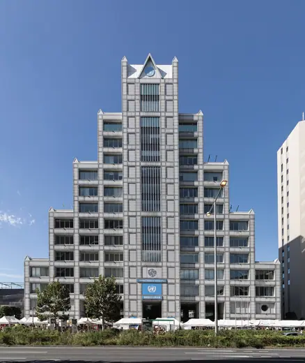
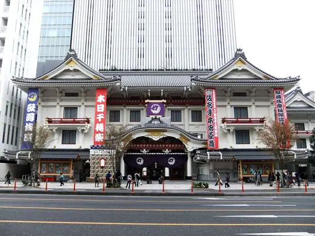
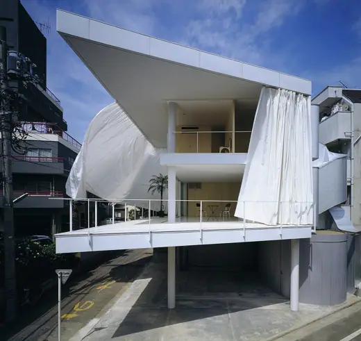
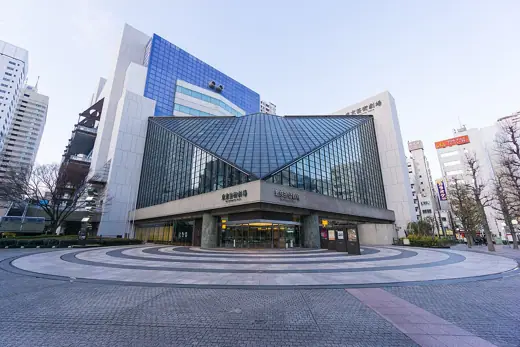
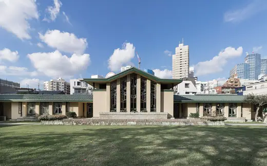

Buildings 73
Sort
 Nakagin Capsule Tower1972 · Tokyo
Nakagin Capsule Tower1972 · Tokyo Mode Gakuen Cocoon Tower2008 · Tokyo
Mode Gakuen Cocoon Tower2008 · Tokyo Edo-Tokyo Museum1993 · Tokyo
Edo-Tokyo Museum1993 · Tokyo National Art Center, Tokyo2007 · Tokyo
National Art Center, Tokyo2007 · Tokyo Spiral1985 · Tokyo
Spiral1985 · Tokyo Casals Hall (Ochanomizu Square)1987 · Tokyo
Casals Hall (Ochanomizu Square)1987 · Tokyo Tokyo Bunka Kaikan1961 · Tokyo
Tokyo Bunka Kaikan1961 · Tokyo National Showa Memorial Museum1999 · Tokyo
National Showa Memorial Museum1999 · Tokyo Omotesando Hills2006 · Tokyo
Omotesando Hills2006 · Tokyo Tokyo Metropolitan Teien Art Museum1933 · Tokyo
Tokyo Metropolitan Teien Art Museum1933 · Tokyo Mikimoto Ginza 22005 · Tokyo
Mikimoto Ginza 22005 · Tokyo Shinjuku Park Tower1994 · Tokyo
Shinjuku Park Tower1994 · Tokyo Tokyo Metropolitan Government Building1991 · Tokyo
Tokyo Metropolitan Government Building1991 · Tokyo Maison Hermès2001 · Tokyo
Maison Hermès2001 · Tokyo Japan National Stadium2019 · Tokyo
Japan National Stadium2019 · Tokyo Tokyo Skytree2012 · Tokyo
Tokyo Skytree2012 · Tokyo Prada Aoyama2003 · Tokyo
Prada Aoyama2003 · Tokyo Nissay Theatre (Nippon Life Hibiya Building)1963 · Tokyo
Nissay Theatre (Nippon Life Hibiya Building)1963 · Tokyo Dentsu Building (Caretta Shiodome)2002 · Tokyo
Dentsu Building (Caretta Shiodome)2002 · Tokyo Tokyo Big Sight1996 · Tokyo
Tokyo Big Sight1996 · Tokyo Takanawa Gateway Station2020 · Tokyo
Takanawa Gateway Station2020 · Tokyo Nippon Budokan1964 · Tokyo
Nippon Budokan1964 · Tokyo
United Nations University Headquarters1992 · Tokyo St. Mary's Cathedral1964 · Tokyo
St. Mary's Cathedral1964 · Tokyo Yoyogi National Gymnasium1964 · Tokyo
Yoyogi National Gymnasium1964 · Tokyo Shizuoka Press and Broadcasting Center1967 · Tokyo
Shizuoka Press and Broadcasting Center1967 · Tokyo Tokyo Metropolitan Art Museum1975 · Tokyo
Tokyo Metropolitan Art Museum1975 · Tokyo Asakusa Culture Tourist Information Center2012 · Tokyo
Asakusa Culture Tourist Information Center2012 · Tokyo Tokyo Metropolitan Gymnasium1990 · Tokyo
Tokyo Metropolitan Gymnasium1990 · Tokyo
Kabuki-za (2013)2013 · Tokyo 21_21 Design Sight2007 · Tokyo
21_21 Design Sight2007 · Tokyo
Curtain Wall House1995 · Tokyo Centennial Hall, Tokyo Institute of Technology1987 · Tokyo
Centennial Hall, Tokyo Institute of Technology1987 · Tokyo Dior Omotesando2003 · Tokyo
Dior Omotesando2003 · Tokyo Tokyo International Forum1996 · Tokyo
Tokyo International Forum1996 · Tokyo National Museum of Western Art1959 · Tokyo
National Museum of Western Art1959 · Tokyo Tokyo Tower1958 · Tokyo
Tokyo Tower1958 · Tokyo Shinjuku NS Building1982 · Tokyo
Shinjuku NS Building1982 · Tokyo Fuji Television Building1996 · Tokyo
Fuji Television Building1996 · Tokyo Embassy of Kuwait, Tokyo1970 · Tokyo
Embassy of Kuwait, Tokyo1970 · Tokyo
Tokyo Metropolitan Theatre1990 · Tokyo Nezu Museum2009 · Tokyo
Nezu Museum2009 · Tokyo SunnyHills at Minami-Aoyama2013 · Tokyo
SunnyHills at Minami-Aoyama2013 · Tokyo Hillside Terrace1992 · Tokyo
Hillside Terrace1992 · Tokyo Sumida Hokusai Museum2016 · Tokyo
Sumida Hokusai Museum2016 · Tokyo Komazawa Olympic Park Control Tower and Gymnasium1964 · Tokyo
Komazawa Olympic Park Control Tower and Gymnasium1964 · Tokyo
Jiyu Gakuen Girls' School1922 · Tokyo Suntory Museum of Art2007 · Tokyo
Suntory Museum of Art2007 · Tokyo